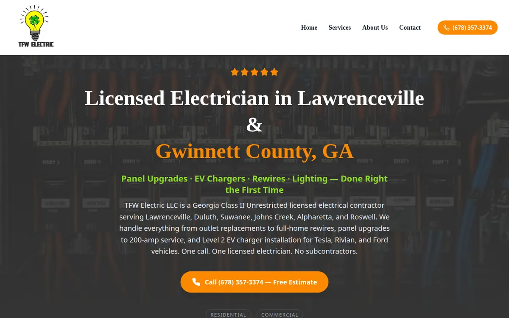
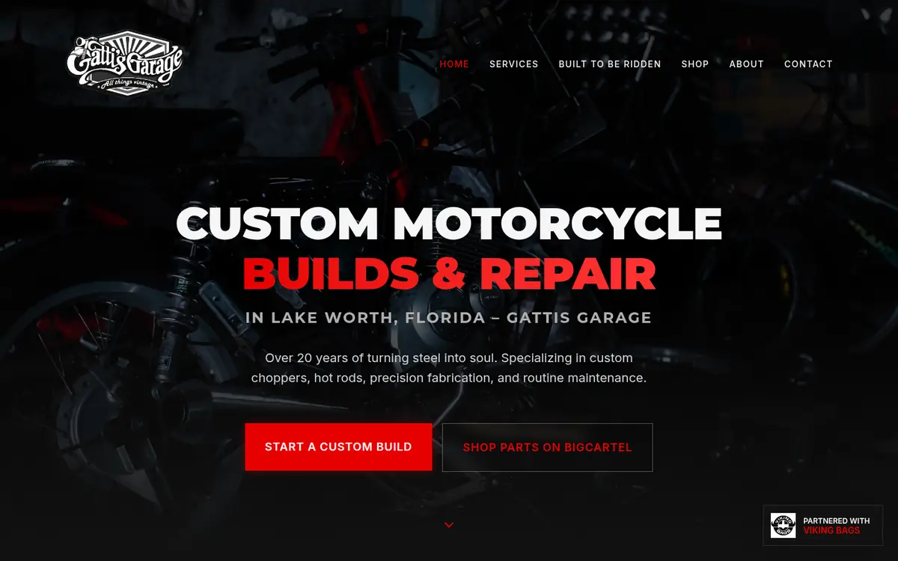
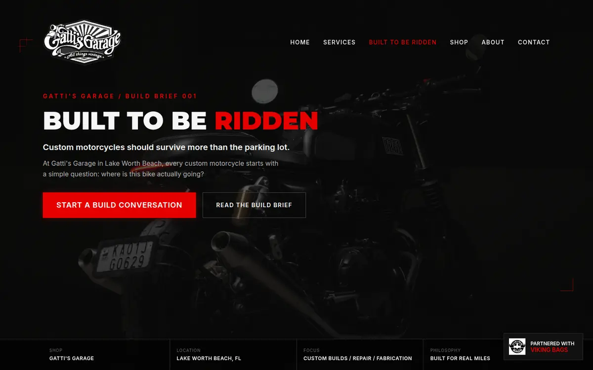
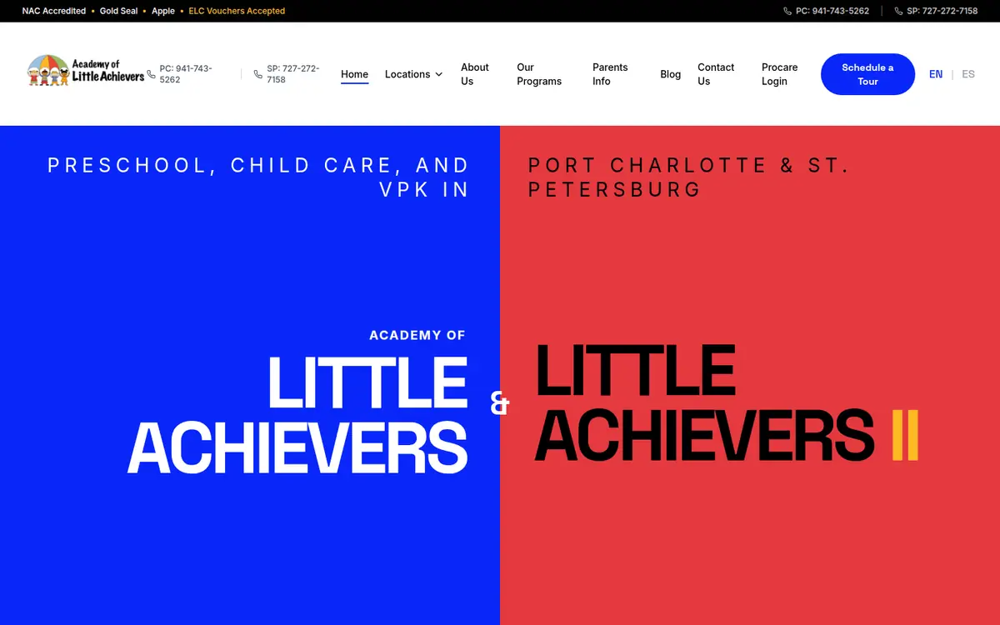
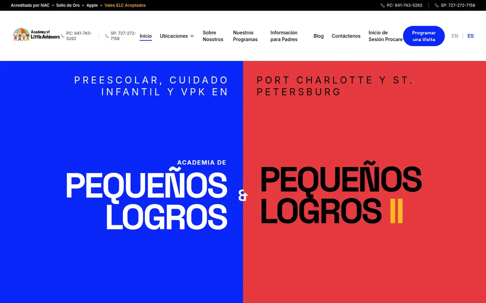
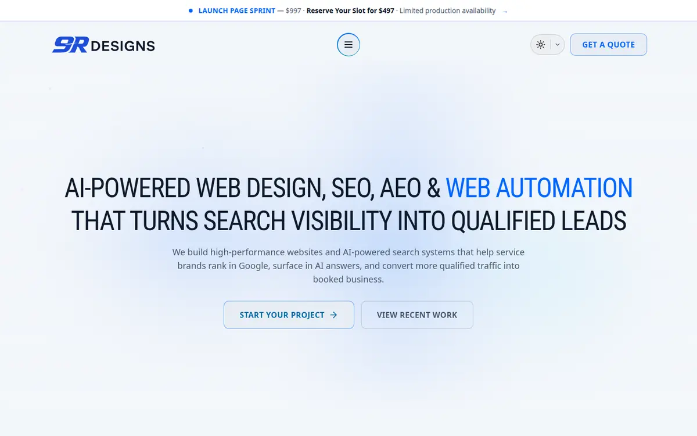
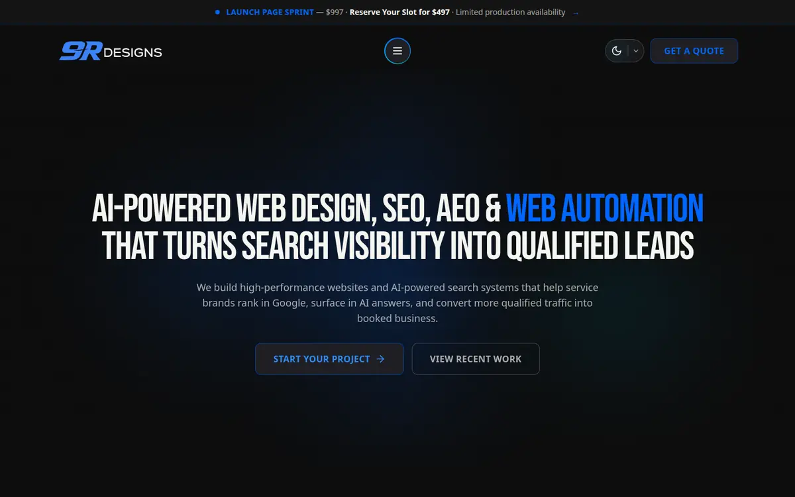
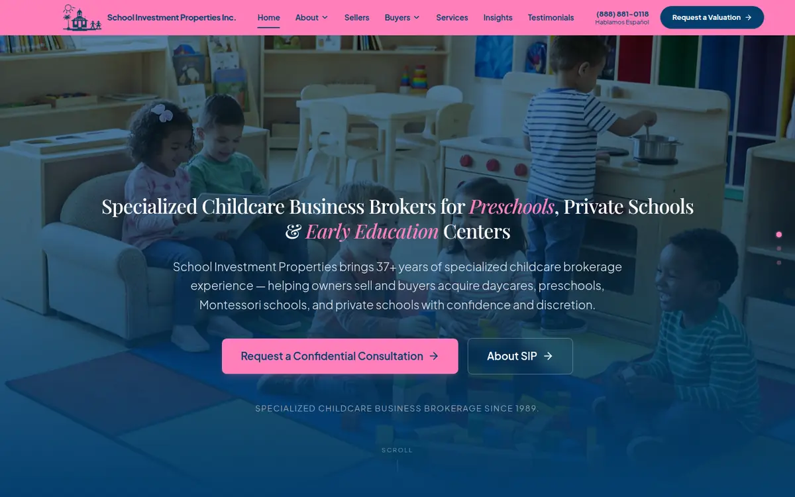
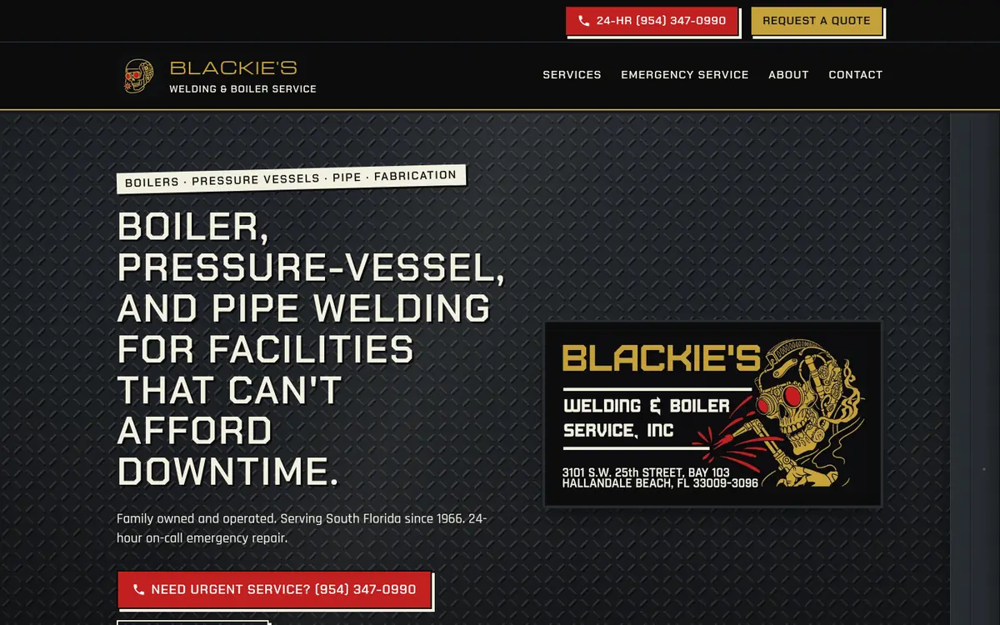
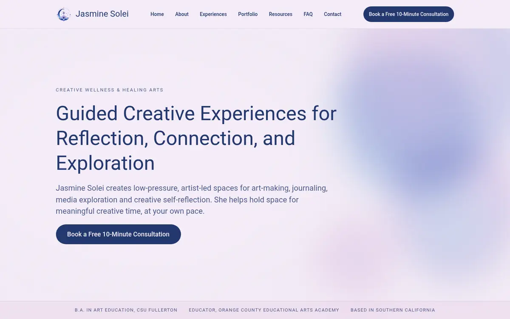

1% → 3%
Conversion rate across Greenlane brand sites in about three months
Greenlane Holdings · Vapor.com, Higher Standards, Puff It Up and more · 2023–2025
Open to senior remote roles · SEO · E-commerce · AI strategy
Show me the work through the lens of
SEO and e-commerce growth strategist. Seven years inside Greenlane’s multi-brand e-commerce portfolio, then a year running my own studio: shipping and ranking sites for an electrician, a chopper shop, three preschools, a childcare brokerage, a welder, and an artist. I design the experience, direct the build, and prove it in Search Console.
Technical, local, and AI-search (AEO/GEO) work built on Google Search Central fundamentals: crawlable HTML, clean canonicals, real schema, intent-mapped pages. Then I go back to Search Console and check whether it worked.
Catalog, merchandising, and conversion work across Vapor.com, Higher Standards, and Puff It Up, plus a 1,445-order, 366-product BigCartel-to-Shopify migration built so a wrong SKU never gets through.
AI orchestration that holds up in production: deterministic Python transforms, QA gates, server-side secrets, and draft-only reporting. AI handles the repetitive work, and nothing goes to a client until I’ve checked it.
Proof, with receipts
1% → 3%
Conversion rate across Greenlane brand sites in about three months
Greenlane Holdings · Vapor.com, Higher Standards, Puff It Up and more · 2023–2025
92 → 364
Monthly Google clicks for Gatti’s Garage, April → July 2026 (about 4×)
Google Search Console · gattisgarage.com
65,804
Google impressions across four First Impressions campuses (1,592 clicks)
Google Search Console · Jan 22 – Oct 22, 2026
50% → full
Academy of Little Achievers enrollment after calls spiked in May
Owner-reported outcome, not an attributed metric
0 mismatches
Across 861 orders and 1,317 line items in the final Shopify migration batch
Deterministic Python QA · Gatti’s Garage migration
2.1
Avg. position for “daycare near me” on the rebuilt Rockledge preschool site
Google Search Console · Jul 22 – Oct 22, 2026
Search Console numbers were pulled directly from the properties I manage. Positions are impression-weighted averages, and branded and non-branded queries are mixed unless I say otherwise. Greenlane figures come from my time on the team, not a public report.
Case studies
Every build is designed around the trade it serves. A welder’s site shouldn’t feel like a preschool’s, and a brokerage shouldn’t feel like a chopper shop.

01 Local SEO · Home services · Lawrenceville, GA
noindex, even though the source code was clean. The robots tag was being changed in JavaScript after the page loaded, and www and non-www versions were competing as canonicals.Built for the trade: a call-first layout with the phone number and license up front, because homeowners with a dead panel call and don’t browse.
02 E-commerce · Migration · Lake Worth Beach, FL
Gatti’s builds custom choppers and bobbers and sells parts. Right now the business runs on two connected surfaces, and I’m building the third. Toggle between the current setup and the planned one:
Why two platforms? The brand site gives me full control over design and SEO, while BigCartel keeps checkout running without interruption. The cost is a split customer journey, which is why the Shopify move is happening.
Status: catalog, history, and theme are staged. Launch waits on the owner’s final inventory sign-off and DNS cutover. The rule I built it on: leaving a SKU link blank is better than linking the wrong one.




English EspañolDrag the handle. The full site switches between English and Spanish, not just the hero, and the two-school split design carries through both versions.
03 Childcare · Local SEO · Enrollment systems · FL
Immersive bilingual (EN/ES) site with a split hero for two schools. Used Search Console to choose priorities: the Port Charlotte page had 523 impressions and 1 click, so it was rebuilt first, followed by a round of title and meta rewrites aimed at CTR.
18,902 impressions since Apr 22 · owner reports enrollment went from about 50% to full licensed capacity
Free VPK landing page, an admissions-age correction carried through copy, schema, and forms, and lead reporting that shows the client aggregated Supabase views while raw parent data stays internal.
65,804 impressions · 1,592 clicks · “first impressions of lake worth” at avg. position 1.0
Cut the domain over to Figma Sites without touching mail records. Found the lost-lead bug: the tour button pointed to a mailto:, not the CRM form. Added attribution fields, GA4 lead events, and a Python/Gemini image-SEO pipeline.
“daycare near me” at avg. position 2.1 · first-month baseline showed organic at 68% engagement vs. 6% for paid social. I reported that to the client rather than leaving it out
Built for the trade: warm palettes, colored-pencil imagery, and parent-trust details like ratios, keyless entry, and licensing shown up front. Parents are deciding who they trust with their kid, not comparing specs.


Light DarkThe same page in light and dark themes. Toggle the theme on this site (top right) to try one.
04 Studio site · Motion design · West Palm Beach
prefers-reduced-motion.05 Launching next · Each one designed around its industry

Seller-first rebuild for a childcare business brokerage founded in 1987. I worked there from 2011 to 2014, so I know who visits the site: owners quietly exploring a sale. The office maintains listings in a Google Sheet that feeds the site directly (40 live records), and confidential school identities never leave the office.
Built for the trade: discretion is the design. One clear call to action, “Get a Confidential Valuation.”

Next.js + TypeScript build for an industrial welding shop in Hallandale Beach. Every certification and compliance claim is tracked as approved, pending, or blocked, so nothing unverified goes on a facilities manager’s screen.
Built for the trade: a fabricated-steel visual system, a diamond-plate hero, a structural steel rail, and a heat glow that follows your cursor.

Next.js site for a mixed-media artist and creative-wellness guide. Her own portfolio is kept separate from participant galleries, wellness language stays non-clinical, and performance is monitored with Vercel Speed Insights.
Built for the trade: a quiet, gallery-first layout where the art leads and motion stays understated.
Visit live site ↗Systems
AI is how I scale my output. Every system below has a human checkpoint, a way to catch failures, and a rule for when to stop.
Every SEO decision starts from Google’s documented guidance, not from tactics that worked once.
A passing preview build doesn’t mean the site is live. I count something as launched only after checking the real domain, confirming a test lead arrives, and seeing Search Console accept the sitemap.
No credentials or customer data in front-end code. Integrations run through server functions.
Every certification, testimonial, or result has a source, or it doesn’t ship. That applies to client sites and to this one.
Experience
Sept 2025 – Present
West Palm Beach, FL · Web design, SEO/AEO/GEO, e-commerce, automation
2023 – Sept 2025
Boca Raton, FL · Multi-brand e-commerce portfolio
2018 – 2023
Promoted through operations into the web team
2015 – 2018
Coral Springs, FL
2011 – 2014
Palm Beach Gardens, FL
Capabilities
Technical & local SEO · AEO / GEO · schema & structured data · Search Console & GA4 · Google Business Profile · content architecture
Shopify / Liquid · BigCartel · BigCommerce · Magento · CRO · catalog & PIM · merchandising · checkout, tax & redirect QA
UX & information architecture · Figma / Figma Make · Next.js · React + Vite · motion design · GitHub · Vercel / Netlify · DNS cutovers
AI orchestration (Perplexity, Claude, Gemini) · Python · Make.com · Supabase · GoHighLevel · Mailchimp · human-review workflows
To be clear about how I work: I architect, direct, and review the code. AI pair-programmers write much of it. I know where these stacks fail silently, and I check those places before anything goes live.
Contact
I’m looking for senior remote roles in SEO and AEO leadership, e-commerce growth, and AI and automation strategy. Teams that care about measurable results and shipping get the best out of me.